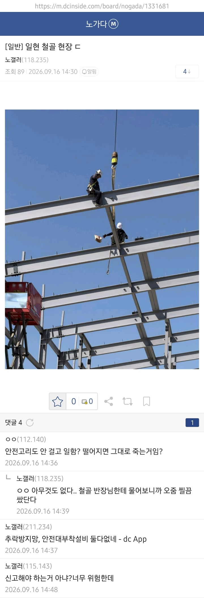
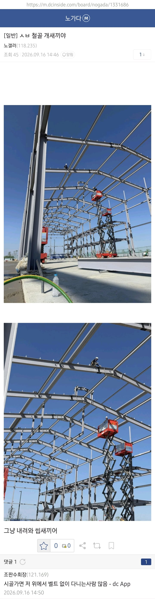
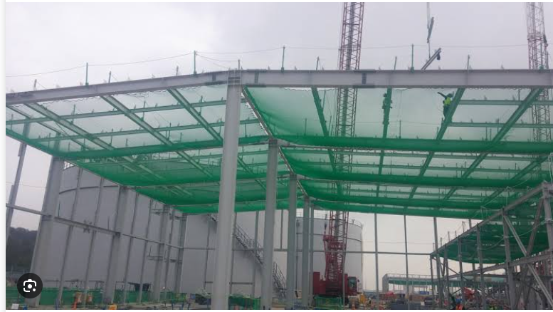

이렇게 해야되는듯
일현 = 반도체를 제외한 일반 현장
ex) 아파트, 주택 등등
철골은 사람 못 구해서 난리고
일당 아주 높다고 함



이렇게 해야되는듯
일현 = 반도체를 제외한 일반 현장
ex) 아파트, 주택 등등
철골은 사람 못 구해서 난리고
일당 아주 높다고 함
작업자가 나 위험해서 이거 작업 못하겠어요 를 안함.
자기들은 작업을 빨리 끝내고 다른곳을 가야 돈이 되기 때문에 안전수칙을 오히려 안지키고 작업을 함.
안전수칙을 지키는 작업자는 나 이거 위험해서 작업 못하겠어요 라고 말안하냐.
사진찍어서 노동부에 신고 때림 그냥
건설업자가 이렇다 저렇다 할 수 있는 시대가 아님
빨리 로봇 시바
왜 본인 목숨을 가지고 ... 안전하게 하시지
윗윗댓글 개붕이가 이유 써놨네
하늘을 날수 있다시네요
못구한다가 목숨을 못구한다는거였구나
저거 다하면 일은 언제해!!! 그냥올라가서해!
소규모 건축현장에서 저지랄하는이유
1.감리대상 건축공사가아니라서 좃대로함
2.감리대상이라도 감리자의 감리비 지불은 건축주가 주는데 자꾸 규정 따지면 공사 일정 늦어지고 공사비만 올라가니 건축주 눈치보느라 말하는것도 한두번.
3.위와 비슷하지만 더 큰 문제 설계자가 감리하는 경우가 있는데 이런경우 지랄하면 일거리 자체가 없어지니 지랄도 정도것함
ㅇㅈ 합니다 감리분도 월급쟁이라 까라면 까야지 ㅋㅋ
니가 말하는 감리단의 감리자와 일반 소규모 현장 감리자는 입장차이가 또 있음
감리비랑 안전관리자 노무비는 세금처럼 지자체에 납부하고 지자체에서 담당공무원 뽑아서 내려보내거나 감리/안전 전문업체에 외주주는걸로 바껴야된다 ㄹㅇ
렌탈 조금만 올라가도 흔들거려서 무서운데
저건 엄청 높이 올라가네
저거 안전장치 푼걸로 발주해서
저렇게 이빠이 올려놓고 움직이는 용감한 사람들도 있음
냉동창고 뿜칠맨들이 많이함
나는 저 고소작업차가 더 무서운데..
철골은 내가 정신 똑바로 차리면 그래도 있을수 있는데 저 고소차는 반드시 쓰러질거 같은데..
사람다리가 덜흔들릴까, 고소작업차가 덜 흔들릴까
나의 코어를 믿어
작업자들부터 스스로 권리를 챙길줄 알아야 업계가 건전해질텐데
유구한 전통있잖아 너 아니어도 할 사람 많아
너 안해? 너 가 다른 사람 부르면돼 이러니까
저런 재능있으면 빌딩 창문 청소나 아파트 페인트칠하는게 더 잘 벌지않음?
그렇네?
안전로프도 안칠거면서 귀찮게 벨트는 왜차고 있노ㅋㅋ 얼탱이가 없네
건설은 아닌데 컨선 트랜스 블록 셀가이드에서 떨어질뻔한적은 있음... 대조베이스였는데 A캐리어 위라 4미터쯤 된듯... 저런 H빔 비슷한거였는데 셀가이드 간격재다가 휘청했는데 다리로 얽어서 매달려서 산 기억이 있다
신기하네 내가 댓글댄것도 있네 ㅋㅋ
조판수회장 네이놈!
머기업에서 하는 현장이었으면
바로 잘리고 다음부터 거기랑 일 못함
안전고리 걸고 한다는데 말리는 사장도 없고 소비자도 없음.. 그 시간 아껴서 속도 빨라진다고 생각하는 사람 본적이 없다
거의 99% 작업자가 귀찮아서 안함. 가지고 있는데 초반에 걸다가 이동하면 계속 다시걸어야 되니까 한번씩 안걸고 하다가 계속 안걸음. 다리로 꽉 잡고있으니 ㄱㅊ, 밸런스ㅈㄴ잘잡고 있으니 ㄱㅊ 이것만 하면 되는데 존나 귀찮아 합리화 하면서 걍 하는거지
근데 저 상태로 이동하는 인간은 본적이 없는데 정황상 리프트가 저기 데려다줬고 작업 끝나고 리프트가 가서 데리고 오겠지
요즘 개좆만한 회사들도 작업 들어온 사람들 대가리 안전모만 잠시 벗어도 지랄하면서 다 퇴장시킴
반장님 먼지많으니까 마스크좀 끼실게요 건강 생각하셔야죠. 반장님 현장에선 안전모좀 쓰고 작업해주세요. 반장님 아시바 쓰실때는 안전난간대랑 아웃트리거 설치하셔야돼요 안전벨트도 하시구요. 반장님 오늘 용접작업있는데 소화기 챙겨가셔야죠.
벨트 걸지도 안을꺼면 진짜 왜차냐.. ㅋㅋ
이건 진짜 당황스럽네 현장 안전하는 입장으로는 말이 안된다.
SK,삼성,현대현장 다 쳐봤고 중견종건 밑에서도 해봤는데 이런곳을 본적이 없었음
이런거 나오면 그냥 노동부 신고하고 현장 나와라 말이 안되네;;
원래 철골 설치는
철골 컬럼(기둥)양중 전부터 난간대(빔포스트)를 설치해야함(컬럼에는 안다는경우도 가끔 있긴한데 대부분 걸고함) 생명줄은 걸 수 없는상태인거고,
그 후에 사람들이 렌탈같은 장비타고 올라가거나, 현장여건상 안되면 갠바(고정식 사다리) 하고 올라감
그 후에 거더(girder,큰 보)를 설치하고 이 철골 자재는 양중 전에 위에 말한 난간대랑 생명줄이 설치 되어있어야함. 이건 기본임
현장 감시단이나 시공사,협력사 안전관리자들도 확인해야하는 부분이고, 생명줄 태그같은것도 설치를 해야함.
그래서 기둥에 있던 난간대에 거더에 연결된 난간대랑 생명줄을 연결을 하면서 철골 상부에서 안전고리를 교차체결하면서 이동을해야함. 해당 내용은 현장 근무 전 관리자들이 최초위험성평가에 작성을 하고 준수해야하는 부분임.
그 후에 1/3이상 볼팅을 하고 빔을 걸고~~ 어쩌구 저쩌구가 되는데 저런현장보면 당장 나와라 지나가다 위에서 떨어진 물건맞고 죽어도 책임안져주고 사라질거같네
말이 안되는 상황임;
나도 건안기있고 시공현장 수없이 점검가봤는데, 현장마다 진짜 케바케임. 소장이 아예 안전에 관심이 없으면 지상1층 슬래브깔고 지상 골조올라가고 부턴 현장사무실에서 맨날 퍼질러 자는 소장도있고, 현장 안전관리자하고 얘기할게있어 전화하면 지하에서 배수판깔고있으니 바쁘다고....소장이 짬시켜서 노가다뛰는 관리자도있고. 뭐 이론상 철골조 상부작업시 생명줄 설치+추락방호망설치+테두리에 낙하물방지망 설치 다있긴한데 그건 도급순위 200위권 위로만 가도 거의다 지킴. 근데 그아래 심해 및 지방쪽은 진짜 말도안되게 하는곳도 아직많다ㅋㅋ
안전관리자가.. 없나?
일당 100 주냐
아시바 메는거 30 주던가
이건 시발ㅋㅋㅋㄱ지들 목숨가지고 돈버는거네
어으 렌탈 저정도까지 올리면 엄청 흔들릴텐데
저래서 공사 안전담당은 총알받이라고 불리는구나 ㄷㄷㄷㄷ
하핫 현장경력 25년 !! 나는 그냥한다!!
이런 마인드겠지 뭐.. 그러다가 사고나는거고
안전장치 개인적으로 준비해가면 코웃음 치면서 그런거 왜 하냐고 비웃음?
떨어지면 죽든가 장애든가 둘중 하나는 확실할 높이인디
여고생, 명문대생이 죽은건 5천만 국민이 다 같이 슬퍼해주지만
개저씨 하나 뒤져버린건 기사 하나 안 난다
산재사고 올라오면 자본가에 의한 타살이니 뭐니 하는데 현장 작업자 마인드 보면 그냥 자살이나 다름없음
안전 작업 늘어나는만큼 기간이랑 비용을 늘려줘야 하는데 기간과 비용은 안올려주니 자연스럽게 돈을 위해 작업자들이 안전을 무시하는 행동을 하게 됨. 대중은 작업자가 탓만 하지. 저런 환경에서 작업자가 나는 위험하니 안전 장비 설치하고 작업하겠소 하면 고용주, 원청이 그래 니 말이 맞다 라고 하겠냐 내일부터 나오지 마세요라고 하겠지. 결국 눈치껏 이것저것 알아서 빼는 일종의 유도리로 일할 수 밖에 없는 구조임. 티비에서 사고터져서 지랄하면 한번 좀 챙기는 척하고 다시 반복. 대한민국에서 안전관련법은 면피용임